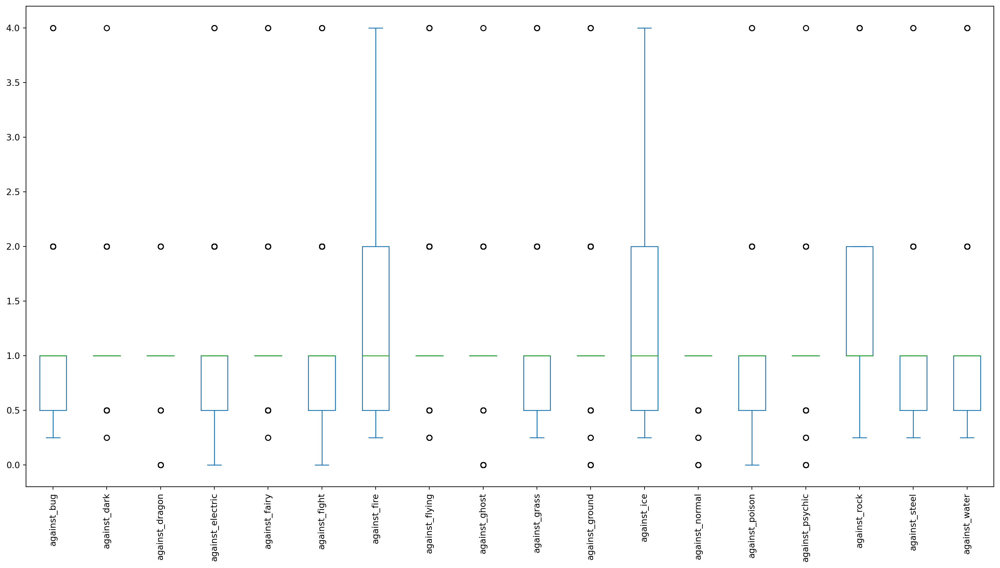
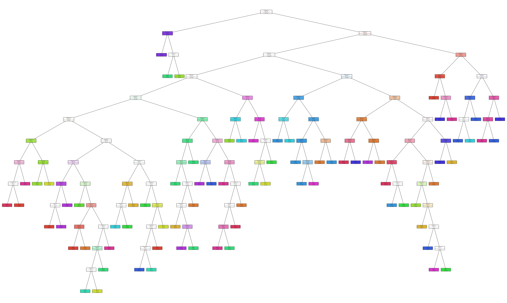
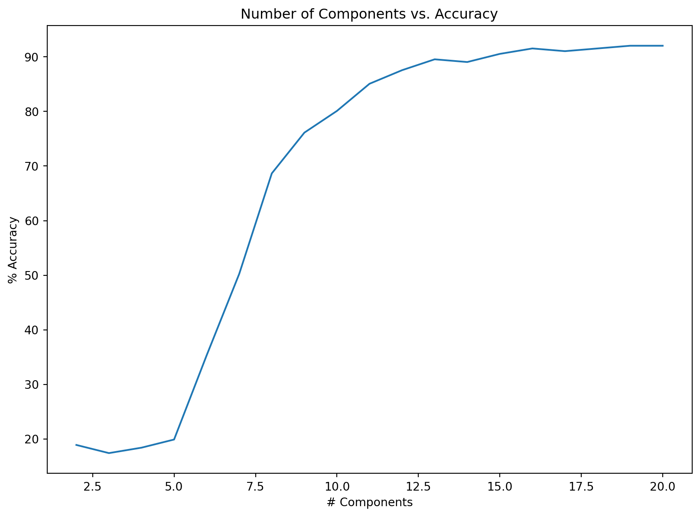
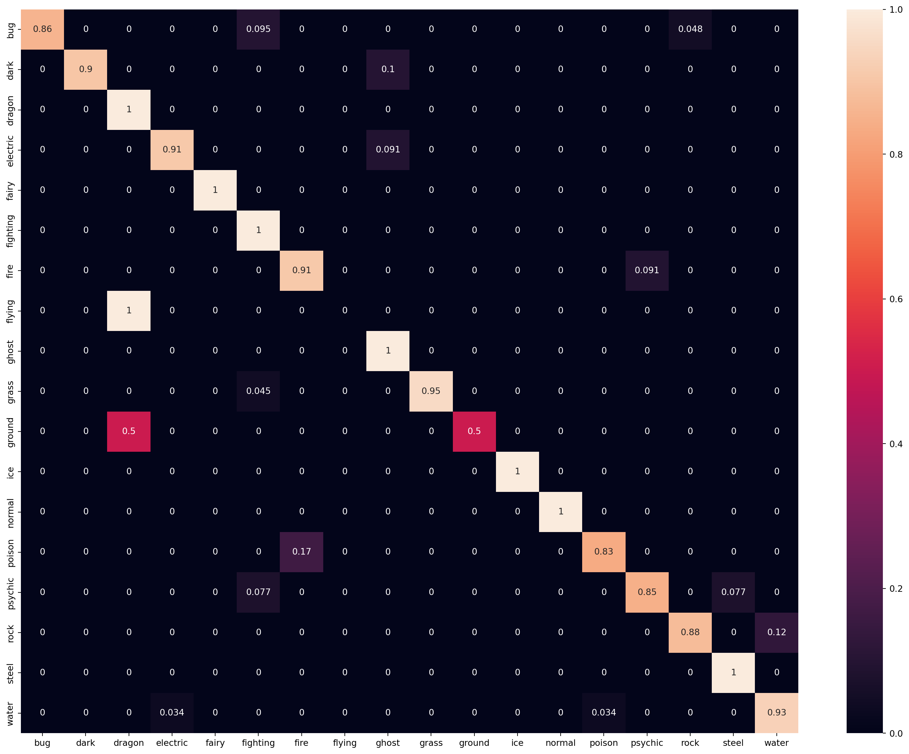

import numpy as np # linear algebra
import pandas as pd # data processing, CSV file I/O (e.g. pd.read_csv)
import matplotlib.pyplot as plt
import seaborn as sns
import sklearn
%matplotlib inlineClassifying Pokemon into their Type1 based on Attack and Defense Stats
Importing Data
- talk about the dataset Importing quantitative and categorical data separately. Only quantitative data will be used for classification
df = pd.read_csv('./pokemon.csv')
df2 = df.select_dtypes(include=['float64','int64'])
df3 = df.select_dtypes(include=['object'])df2.head()| against_bug | against_dark | against_dragon | against_electric | against_fairy | against_fight | against_fire | against_flying | against_ghost | against_grass | ... | height_m | hp | percentage_male | pokedex_number | sp_attack | sp_defense | speed | weight_kg | generation | is_legendary | |
|---|---|---|---|---|---|---|---|---|---|---|---|---|---|---|---|---|---|---|---|---|---|
| 0 | 1.0 | 1.0 | 1.0 | 0.5 | 0.5 | 0.5 | 2.0 | 2.0 | 1.0 | 0.25 | ... | 0.7 | 45 | 88.1 | 1 | 65 | 65 | 45 | 6.9 | 1 | 0 |
| 1 | 1.0 | 1.0 | 1.0 | 0.5 | 0.5 | 0.5 | 2.0 | 2.0 | 1.0 | 0.25 | ... | 1.0 | 60 | 88.1 | 2 | 80 | 80 | 60 | 13.0 | 1 | 0 |
| 2 | 1.0 | 1.0 | 1.0 | 0.5 | 0.5 | 0.5 | 2.0 | 2.0 | 1.0 | 0.25 | ... | 2.0 | 80 | 88.1 | 3 | 122 | 120 | 80 | 100.0 | 1 | 0 |
| 3 | 0.5 | 1.0 | 1.0 | 1.0 | 0.5 | 1.0 | 0.5 | 1.0 | 1.0 | 0.50 | ... | 0.6 | 39 | 88.1 | 4 | 60 | 50 | 65 | 8.5 | 1 | 0 |
| 4 | 0.5 | 1.0 | 1.0 | 1.0 | 0.5 | 1.0 | 0.5 | 1.0 | 1.0 | 0.50 | ... | 1.1 | 58 | 88.1 | 5 | 80 | 65 | 80 | 19.0 | 1 | 0 |
5 rows × 34 columns
df3.head()| abilities | capture_rate | classfication | japanese_name | name | type1 | type2 | |
|---|---|---|---|---|---|---|---|
| 0 | ['Overgrow', 'Chlorophyll'] | 45 | Seed Pokémon | Fushigidaneフシギダネ | Bulbasaur | grass | poison |
| 1 | ['Overgrow', 'Chlorophyll'] | 45 | Seed Pokémon | Fushigisouフシギソウ | Ivysaur | grass | poison |
| 2 | ['Overgrow', 'Chlorophyll'] | 45 | Seed Pokémon | Fushigibanaフシギバナ | Venusaur | grass | poison |
| 3 | ['Blaze', 'Solar Power'] | 45 | Lizard Pokémon | Hitokageヒトカゲ | Charmander | fire | NaN |
| 4 | ['Blaze', 'Solar Power'] | 45 | Flame Pokémon | Lizardoリザード | Charmeleon | fire | NaN |
Data Preprocessing
Encoding type1 labels
from sklearn import preprocessing
le = preprocessing.LabelEncoder()
labels = le.fit_transform(df['type1'])
print(len(le.classes_))
print(le.classes_)18
['bug' 'dark' 'dragon' 'electric' 'fairy' 'fighting' 'fire' 'flying'
'ghost' 'grass' 'ground' 'ice' 'normal' 'poison' 'psychic' 'rock' 'steel'
'water']Encoding type2 labels
type2_le = preprocessing.LabelEncoder()
type2 = type2_le.fit_transform(df['type2'].astype(str))
len(type2_le.classes_)19Fill missing data points with the mean of that column
for i in df2:
if df[i].isnull().values.any():
df[i].fillna(df[i].mean(), inplace=True)Make sure that there are no NaN values remaining
df[list(df2)].isnull().values.any()Falsedf.loc[:, df.columns.str.contains('against')].plot(kind="box", figsize=(20,10));
plt.xticks(rotation=90);
Creating dataset for training, combining encoded labels with imputed attack and defense values from original dataset
data = {
'attack': df['attack'],
'defense': df['defense'],
'sp_attack': df['sp_attack'],
'sp_defense': df['sp_defense'],
'type2': type2,
'type1': df['type1']
}
data = pd.DataFrame(data)
data = df.filter(like='against').join(data)
X = data.drop('type1', axis=1)
y = data['type1']
print(list(X))
X.head()['against_bug', 'against_dark', 'against_dragon', 'against_electric', 'against_fairy', 'against_fight', 'against_fire', 'against_flying', 'against_ghost', 'against_grass', 'against_ground', 'against_ice', 'against_normal', 'against_poison', 'against_psychic', 'against_rock', 'against_steel', 'against_water', 'attack', 'defense', 'sp_attack', 'sp_defense', 'type2']| against_bug | against_dark | against_dragon | against_electric | against_fairy | against_fight | against_fire | against_flying | against_ghost | against_grass | ... | against_poison | against_psychic | against_rock | against_steel | against_water | attack | defense | sp_attack | sp_defense | type2 | |
|---|---|---|---|---|---|---|---|---|---|---|---|---|---|---|---|---|---|---|---|---|---|
| 0 | 1.0 | 1.0 | 1.0 | 0.5 | 0.5 | 0.5 | 2.0 | 2.0 | 1.0 | 0.25 | ... | 1.0 | 2.0 | 1.0 | 1.0 | 0.5 | 49 | 49 | 65 | 65 | 14 |
| 1 | 1.0 | 1.0 | 1.0 | 0.5 | 0.5 | 0.5 | 2.0 | 2.0 | 1.0 | 0.25 | ... | 1.0 | 2.0 | 1.0 | 1.0 | 0.5 | 62 | 63 | 80 | 80 | 14 |
| 2 | 1.0 | 1.0 | 1.0 | 0.5 | 0.5 | 0.5 | 2.0 | 2.0 | 1.0 | 0.25 | ... | 1.0 | 2.0 | 1.0 | 1.0 | 0.5 | 100 | 123 | 122 | 120 | 14 |
| 3 | 0.5 | 1.0 | 1.0 | 1.0 | 0.5 | 1.0 | 0.5 | 1.0 | 1.0 | 0.50 | ... | 1.0 | 1.0 | 2.0 | 0.5 | 2.0 | 52 | 43 | 60 | 50 | 12 |
| 4 | 0.5 | 1.0 | 1.0 | 1.0 | 0.5 | 1.0 | 0.5 | 1.0 | 1.0 | 0.50 | ... | 1.0 | 1.0 | 2.0 | 0.5 | 2.0 | 64 | 58 | 80 | 65 | 12 |
5 rows × 23 columns
Decision Tree Classifier
- what is a decision tree, how does it work, complications/shortcomings
- equations
- applications
- talk about what I am doing in the next blocks
- cross validation
from sklearn import tree
from sklearn.model_selection import cross_val_score, KFold
kfold = KFold(n_splits=10, shuffle=True)
clf = tree.DecisionTreeClassifier()
clf = clf.fit(X,y)
result = cross_val_score(clf, X, y, cv=kfold, scoring='accuracy')
print(result.mean())0.9214197530864198Visualizing the Tree
# plotting decision tree with dilineating features -> FIX LATER
import matplotlib.pyplot as plt
plt.figure(figsize=(60,36))
tree_plot = sklearn.tree.plot_tree(clf, filled=True, rounded=True, class_names=list(y.unique()), feature_names=list(X.columns))
Logistic Regression Classifier
from sklearn.linear_model import LogisticRegression
from sklearn.metrics import confusion_matrix
from sklearn.model_selection import train_test_split
from sklearn.metrics import accuracy_score
X_train, X_test, y_train, y_test = train_test_split(X, y, test_size=0.25, random_state=48)
log_reg = LogisticRegression(max_iter=1000)
log_reg.fit(X_train, y_train)
accuracy_score(y_test, log_reg.predict(X_test))C:\Users\anika\anaconda3\Lib\site-packages\sklearn\linear_model\_logistic.py:460: ConvergenceWarning:
lbfgs failed to converge (status=1):
STOP: TOTAL NO. of ITERATIONS REACHED LIMIT.
Increase the number of iterations (max_iter) or scale the data as shown in:
https://scikit-learn.org/stable/modules/preprocessing.html
Please also refer to the documentation for alternative solver options:
https://scikit-learn.org/stable/modules/linear_model.html#logistic-regression
0.9203980099502488num_components = []
accuracies = []
from sklearn.decomposition import PCA
for n in range(2,21):
pca = PCA(n_components=n)
principalComponents = pca.fit_transform(X)
X_train, X_test, y_train, y_test = train_test_split(principalComponents, y, test_size=0.25, random_state=48)
log_reg = LogisticRegression(max_iter=1000)
log_reg.fit(X_train, y_train)
accuracy = accuracy_score(y_test, log_reg.predict(X_test))
print( str(n) + " Principal components produce an accuracy of: " + str(accuracy))
num_components.append(n)
accuracies.append(accuracy*100)2 Principal components produce an accuracy of: 0.1890547263681592
3 Principal components produce an accuracy of: 0.17412935323383086
4 Principal components produce an accuracy of: 0.18407960199004975
5 Principal components produce an accuracy of: 0.19900497512437812
6 Principal components produce an accuracy of: 0.35323383084577115
7 Principal components produce an accuracy of: 0.5024875621890548
8 Principal components produce an accuracy of: 0.6865671641791045
9 Principal components produce an accuracy of: 0.7611940298507462
10 Principal components produce an accuracy of: 0.8009950248756219
11 Principal components produce an accuracy of: 0.8507462686567164
12 Principal components produce an accuracy of: 0.8756218905472637
13 Principal components produce an accuracy of: 0.8955223880597015
14 Principal components produce an accuracy of: 0.8905472636815921
15 Principal components produce an accuracy of: 0.9054726368159204
16 Principal components produce an accuracy of: 0.9154228855721394
17 Principal components produce an accuracy of: 0.9104477611940298
18 Principal components produce an accuracy of: 0.9154228855721394
19 Principal components produce an accuracy of: 0.9203980099502488
20 Principal components produce an accuracy of: 0.9203980099502488C:\Users\anika\anaconda3\Lib\site-packages\sklearn\linear_model\_logistic.py:460: ConvergenceWarning:
lbfgs failed to converge (status=1):
STOP: TOTAL NO. of ITERATIONS REACHED LIMIT.
Increase the number of iterations (max_iter) or scale the data as shown in:
https://scikit-learn.org/stable/modules/preprocessing.html
Please also refer to the documentation for alternative solver options:
https://scikit-learn.org/stable/modules/linear_model.html#logistic-regression
plt.figure(figsize=(10,7))
plt.plot(num_components, accuracies)
plt.title("Number of Components vs. Accuracy")
plt.xlabel("# Components")
plt.ylabel("% Accuracy")Text(0, 0.5, '% Accuracy')
Visualizing the classifier’s accuracy using a confusion matrix
from sklearn.metrics import confusion_matrix
y_pred = log_reg.predict(X_test)
cm = confusion_matrix(y_test, y_pred)
cm = cm.astype('float') / cm.sum(axis=1)[:, np.newaxis]
cm = pd.DataFrame(cm, index=le.classes_, columns=le.classes_)
plt.subplots(figsize=(20,15));
sns.heatmap(cm, annot=True);